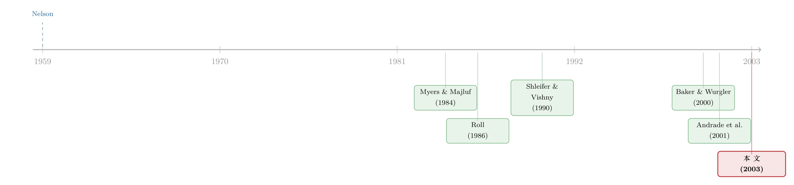

贵的股票，是一种可以花出去的货币——重读「市场驱动的并购」
本文读的是 Shleifer & Vishny (2003, Journal of Financial Economics)：把并购重新理解成「理性经理人在非理性市场里做的一次套利」。当一家公司的股票被高估，它最聪明的做法不是发增发、不是囤现金，而是用这张被吹大的「纸」去换另一家公司实打实的资产——谁收购谁、用现金还是换股、为什么并购总扎堆在牛市，全都能从「相对估值」和「市场以为的协同」这两件事里推出来。
1 一个被讲反了的并购故事
并购这件事，金融学里有两套经典叙事。
一套是新古典的 (neoclassical)：并购是产业受到冲击（反垄断、放松管制、技术变迁）之后，资源向更有效率的方向重新配置——好的买家把资本和管理能力注入差的标的，于是「1+1>2」。这套理论解释力很强，但它有几处怎么也圆不过去的硬伤：它解释不了为什么并购会成「浪」（除非好几个产业恰好同时被冲击），它解释不了为什么有时用现金、有时用换股，它甚至在「并购到底有没有提高盈利能力」这个最根本的问题上都拿不出干净的证据。
另一套是 Roll (1986) 的自负假说 (hubris hypothesis)：市场是理性的，但经理人不是——他们高估了自己整合的能力，于是付了过高的价钱。
Shleifer 和 Vishny 这篇文章，干的是一件几乎是把 Roll 的故事整个翻过来的事。
在他们的世界里：市场是非理性的，经理人却是完全理性的。经理人清楚地知道自己的股票被高估了多少、对手被高估了多少、市场以为这桩合并有多少协同，然后冷静地利用这些错误定价来为自己谋利。并购，在这里成了「理性人在无效市场里做的一次套利」。
这听上去像是一句俏皮的对仗，但它恰恰是 1990 年代那波并购浪潮逼出来的答案。那一波并购，绝大多数是换股 (stock)、买家和卖家通常在同一个行业、而且都发生在股市估值极高的年份。再往前看，1960 年代的混合集团 (conglomerate) 并购，同样是换股、同样发生在高估值年份；唯独 1980 年代那波「敌意收购」是个例外——付的是现金、估值偏低、买家往往是金融家而非同行。
这几张面孔之间的差别，新古典理论说不清，自负假说更说不清。但只要你承认「股价会偏离基本面、而经理人会利用这种偏离」，一切就都串起来了。
2 模型：三个数字写就的并购剧本
这是一篇纯理论的文章，模型简单到近乎吝啬，却把整出戏都装了进去。我们一步一步来。
2.1 三个原始变量
考虑两家公司，记为 0 和 1，资本存量分别是 \(K\) 和 \(K_1\)。市场对它们每单位资本的估值分别是 \(Q\) 和 \(Q_1\)。
第一个、也是全文的根基假设：\(Q\) 和 \(Q_1\) 不是有效估值，而是反映了投资者情绪 (investor sentiment)。不失一般性，设
$$Q_1 > Q$$
也就是公司 1 是「更被高估」的那一家。
如果两家合并，市场对合并后实体每单位资本的短期估值记为 \(S\)，于是合并后的总市值是
$$V = S(K + K_1)$$
作者把 \(S\) 叫做感知协同 (perceived synergy)——注意，是「感知的」。\(S\) 不是真实的协同，而是市场关于这桩合并的「故事共识」：可能是多元化的故事，可能是行业整合的故事，也可能是「欧洲一体化」的故事。用作者自己的话说，\(S\) 只是「润滑并购车轮的润滑油，可能是投行或学者编出来的，跟真正驱动并购的东西没什么关系」。典型情形是 \(Q < S < Q_1\)。
第二个关键假设，是一个故意走极端的简化：长期来看，所有资产每单位资本都只值 \(q\)（\(q\) 最好理解成资本成本）。这意味着——
$$\text{长期不存在任何并购收益}$$
没有协同、没有管理改善，合并前后总价值不变。作者坦言这不符合现实（1980 年代的敌意收购大概率创造了效率），但他们要的就是这种「与新古典理论的最大反差」：把真实协同设成零，看看「纯粹的金融把戏」能把我们带多远。
第三个假设：市场无效，但经理人完全理性且信息充分。他们精确地知道 \(Q\)、\(Q_1\)、\(S\) 以及长期价值 \(q\)，然后在自己的视野 (horizon) 约束下最大化个人财富。
2.2 收购的算术
现在让更值钱的公司 1 去收购公司 0，付给目标每单位资本的价格是 \(P\)。作者特意不套用某个具体的要价模型（如 Grossman and Hart, 1980），而是把 \(P\) 直接解释成低估值一方的「相对议价能力」：\(P=Q\) 意味着没有溢价，\(P=S\) 意味着按合并后的短期估值定价。现实中 \(P\) 往往低于 \(S\)，因为可选标的很多，而且收购方还能私下补偿目标的经理人，让他们接受一个 \(P 并购公告除了「感知协同」之外不向市场传递任何信息——市场不会因此把价格修正向基本面。在这个设定下，短期里现金收购和换股收购的市值变化完全一样（因为市场对两者的推断相同）。于是有了第一个命题。 Proposition 1（短期效应）. 公告瞬间，合并实体的市值变化为 $$S(K + K_1) - K_1 Q_1 - KQ$$ 对目标短期价值的影响为 \((P-Q)K\)；对收购方短期价值的影响为 这条公式是整篇文章的引擎。它把收购方的短期得失拆成两股相反的力：一股是「占了目标的便宜」（\(P 短期是幻觉，长期才见真章。这里现金和换股第一次分道扬镳。 现金收购（Proposition 2）：长期对合并价值的影响是零，对目标是 \(K(P-q)\)，对收购方是 \(K(q-P)\)。一句话——目标赚的，正是收购方亏的。现金收购唯一的长期理由，是目标被低估了（\(P 换股收购（Proposition 3）：这才是 1990 年代的主角。换股之后，目标股东最终持有合并公司的股权比例是 $$x = \frac{PK}{S(K + K_1)}$$ 长期来看，这部分股权值 \(xq(K+K_1) = q(P/S)K\)。于是： $$\text{目标股东的长期净收益} = q(P/S)K - qK = qK\!\left(\frac{P}{S} - 1\right)$$ 收购方股东则拿到正好相反的一份：\(qK(1 - P/S)\)。 读到这里，那个被反复打磨的核心终于现形了： 换股收购里，收购方股东在长期获益，当且仅当 \(P < S\)。 道理朴素得惊人——只要你用「比市场以为的合并估值更便宜」的条件去换股，你就增加了自家股东对「真实物理资本」的索取权。既然长期里所有资本都同价（都值 \(q\)），多占了资本，长期就一定更富。\(P 而最精彩的反转在最后：长期「收益」和长期「观测到的股票回报」不是一回事。 一家被高估的公司，即便什么都不做，它的长期回报也是 \(K_1(q - Q_1)\)——当 \(Q_1>q\)（初始高估）时，这是个负数，股价注定要跌回基本面。而做了这笔换股收购，它的长期增量回报是 \(qK(1-P/S)\)，在 \(P 两者相加，观测到的总回报仍然可能是负的——尤其当初始高估很严重时。于是你会在数据里看到「换股收购方长期跑输」，并据此说并购毁灭了价值。但这个推断是错的：用高估的股票去换资产，恰恰是在为这场注定的下跌「垫了一块缓冲垫」——股价照跌，只是没有「什么都不做」跌得那么惨。换股收购，因此可以既符合长期股东利益、又在数据里呈现为负的长期回报。这一笔，是这篇文章留给后世实证研究最深的一个坑，也最值钱。 模型一旦立住，预言就像多米诺一样倒下来。作者列了九条，挑几条最有「指纹」的看： 谁收购谁、用什么付。 现金收购的目标是被低估的公司，而且更可能是敌意的；换股收购则需要三个条件同时成立：市场估值高、且存在「高度高估的买家」与「相对没那么高估的卖家」之间的落差（所以估值离散度 (dispersion) 越大，换股并购越多）；市场要相信有协同 \(S\)；以及目标的经理人要么视野短、要么被收买得点头。 为什么并购扎堆在牛市。 因为牛市同时满足了「高估值 + 高离散度」，于是换股这台机器才有燃料。这一点把新古典理论解释不了的「总量并购浪潮」补上了。（关于并购为何总在好年景成浪，还有一个把「等待」算成实物期权的视角，可参见《并购为什么总扎堆在好年景？》。） 为什么买家愿意换股、而不是增发囤现金。 这是模型里一段很漂亮的讨论。收购一桩资产和「增发投资于新资本」在概念上是等价的：前者只要 \(P 为什么目标会同意一笔长期对自己不利的换股。 模型里合并的长期总收益是零，收购方赚的就是目标亏的，那目标凭什么点头？两个答案：一是视野差异——若 \(Q 把这条线索捋直，会发现它并非凭空出现，而是「行为公司金融 (behavioral corporate finance)」这条河流里很自然的一段。 最早的源头要追到 Nelson (1959) 对美国并购浪潮的研究——他早就观察到「并购的扩张不仅是繁荣的现象，更与资本市场的状态密切相关：两次没有伴随股价强劲上行的经济扩张期，都没有出现并购复兴」。这几乎是本文的散文版纲领。 接着，标准的信息经济学给出了 Myers and Majluf (1984)：公司的融资和投资决策会因「经理人比投资者知道得多」而扭曲——但注意，本文恰恰关掉了这条信息渠道（假设市场从公告里学不到任何关于基本面的信息），好让「错误定价」单独登场。然后是 Roll (1986) 的自负假说，本文的直接「靶子」与镜像。  真正铺好地基的，是 1990 年前后 Shleifer、Vishny 和 Stein 这批人的工作：DeLong, Shleifer, Summers and Waldmann (1990) 的噪声交易者模型，让「价格持续偏离基本面」在均衡里站住了脚；Stein (1988, 1996) 把「无效市场里理性公司该怎么做资本预算」讲清楚了；Shleifer and Vishny (1990) 的「投资者与公司的均衡短视野」给「为什么有人愿意当目标」提供了微观基础。到了世纪之交，Baker and Wurgler (2000, 2002) 的市场择时 (market timing) 研究——增发的股权份额能预测市场回报、择时塑造了资本结构——把「经理人利用错误定价」这件事做成了实证主线。本文，正是这条主线在「并购」这块版图上的落子。（关于经理人择时与发证券时的股价反应，可参见《公司一发证券股价就跌：是老板在「择时」，还是市场在「定价」？》。） 实证上，本文要「容纳」的核心事实来自 Loughran and Vijh (1997) 与 Rau and Vermaelen (1998)：换股收购方长期跑输、现金收购方长期跑赢，且在 Fama and French (1993) 的规模与账面市值比调整后依然存在——尽管 Mitchell and Stafford (2000) 和 Andrade et al. (2001) 用「并购样本不独立」对这组证据提出了挑战。本文那条「长期收益 ≠ 观测回报」的反转，恰好是为这场争论量身定做的解药。 Q：这和 Roll 的自负假说到底差在哪？不都是「并购方亏钱」吗？ 差在「谁不理性」。Roll 说市场理性、经理人非理性（高估自己），所以并购方亏钱是经理人犯的错。本文说市场非理性、经理人理性，并购方观测到的负回报不是错误，而是高估股票回归途中本就要承担的损失——换股反而让股东少亏。一个把负回报当「病」，一个把它当「药效不够强」。 Q：长期协同被设成零，是不是太极端、把结论提前写好了？ 是极端，但作者是故意的：把真实协同设成零，是为了证明「即便完全没有协同，纯金融动机也足以解释并购的全部特征」。这是一个「下界」论证。现实中协同当然可能为正（1980 年代敌意收购大概率创造了效率），加进去只会让现金收购更有道理，不会推翻换股那套逻辑。 Q：既然现金收购就是「买便宜货」，那收购方为什么不直接去二级市场买一篮子被低估的股票？ 作者正面回答了。其一，收购方对某个特定标的的「被低估」有信息优势，比对一个组合更有把握；其二，兑现低估往往需要控制权——拆分、卖资产，没有控制权做不了。1980 年代的「掠夺者」就是干这个的，但通过一家有资产负债表的公司来做，更容易为收购融资。 Q：为什么现金收购更容易是敌意的，换股反而温和？ 因为换股收购里，目标经理人可以和收购方「分赃」——加速期权、留任、遣散费，双方都甩掉了高估的股权（一个靠个人抛售，一个靠增发），代价转嫁给新进的收购方股东。现金收购没有这种「贸易的好处」，所以更容易撕破脸。敌意，本质上是「没法私下做交易」的副产品。 Q：模型说目标经理人「视野短」才会卖，这能验证吗？ 能，而且 Hartzell, Ofek and Yermack (2003) 已经给了一半答案：拿到特殊个人待遇的目标 CEO，接受了更低的溢价——这正是「被收买」那条机制的直接证据。视野短（临近退休、持有非流动期权）则可以用 CEO 年龄、任期、期权可行权状态去代理。 Q：如果市场会从并购公告里「学到东西」、把价格修正向基本面，结论还成立吗？ 作者说只要学习是不完全的就行。均衡里价格对理性投资者的信念赋一点权重、对投资者情绪赋一点权重，这在无效市场模型里是标准设定（如 DeLong et al., 1990）。只要情绪还在影响价格，本文的结果就活着。 1. 用「估值离散度」预测换股并购浪潮——但搬到信用市场。
【经济故事】本文预言换股并购量随「估值离散度」上升。一个自然的延伸：当公司债市场的估值离散度（同评级内利差的横截面分散）很高时，是不是也会出现「被高估的发行人用债务融资去收购」？机制是 \(Q\)、\(Q_1\) 从股权估值换成了「信用估值」。
【可行性】中。需要 TRACE 的二级市场利差构造横截面离散度，配 SDC 并购数据。识别上要小心离散度与宏观周期共线，可用行业内离散度并控制总量估值。Doable，但「债务驱动并购」的样本可能偏薄。 2. 外资持有人是「短视野的目标股东」吗？
【经济故事】本文把「谁愿意当目标」归结到视野长短。外资机构持有人常被认为视野更短、更易在溢价出现时抛售。那么外资持股比例高的公司，是否更可能成为换股收购的目标、且接受更低溢价？
【可行性】中高。FactSet/Thomson 的机构持股可拆出外资份额，配跨国并购数据。识别可用指数纳入（如 MSCI 调整）带来的外生外资持股变动作工具。这条线和《外资真是「蝗虫」吗？》 的视角能接上。 3. 把「长期收益 ≠ 观测回报」做成一个可检验的分解。
【经济故事】本文最深的洞见是：换股收购方的负回报，应拆成「初始高估的回归」与「并购带来的正增量」两块。能不能用一个反事实（matched 的同样高估、但没并购的公司）把这两块分离出来，直接检验「并购方虽跑输，但跑输得更少」？
【可行性】高。这是一个干净的匹配 + 长期回报 (BHAR/calendar-time) 设计，数据用 CRSP/Compustat + SDC。难点在构造「同样高估」的对照组（用 M/B、应计、内部人抛售等代理高估）。这正是对 Loughran-Vijh 那组证据的再审。 4. 盈利操纵作为「坐实高估」的工具。
【经济故事】模型暗示高估的收购方有动机制造盈利增长来支撑估值。Erickson and Wang (1999) 已发现换股收购方在并购前做盈利管理。可进一步问：操纵越狠的收购方，是不是 \(S\)（感知协同）被市场定得越高、长期跌得越惨？
【可行性】高。应计/真实盈余管理指标成熟，配公告期与长期回报。可与《财报里那点「虚」，藏在并购方三年后的股价里》 的发现互相印证。 这是一篇「四两拨千斤」的文章——一个几乎没有动态、没有不确定性、连真实协同都设成零的极简模型，却同时解释了谁收购谁、用现金还是换股、并购为什么成浪、长期回报为什么是负的这几件原本互相打架的事实。它的贡献不在于某个精巧的数学，而在于一次视角的翻转：把并购从「实业整合」或「经理人犯错」，重新定义为「理性经理人在错误定价市场里的套利」。这个视角后来几乎成了行为公司金融的标准词汇表的一部分。 对它的「识别」担忧，则恰恰来自它的纯理论身份：模型把一切（\(S\)、\(P\)、视野）都当外生给定，于是它预言力极强、却几乎无法被单独证伪。真正吃力的活全留给了实证——尤其是那条「长期收益 ≠ 观测回报」的论断，听上去无懈可击，但它意味着「换股收购方跑输」既可以是模型的证据、也可以是模型的反例，全看你怎么构造反事实。这是一把双刃剑：它救了 Loughran-Vijh 的证据，也让模型很难被数据真正拒绝。 我接下来最想看到的，是有人把 \(S\)（感知协同）从「黑箱」里拽出来度量——用分析师报告、媒体文本、或电话会里反复出现的「协同故事」做代理，再去检验「\(S\) 越被市场吹高、\(P/S\) 越低、长期跌得越惨」这条链条。把那块「润滑油」称出重量，这个模型才算真正落地。2.3 真正关键的一步：长期里谁赚谁亏
3 把九条预言一次性推出来
4 文献脉络
5 评论与延伸（Q&A + 研究方向）
(a) 几个可能的疑问
(b) 几个可能的研究问题与提案
6 我的判断
参考文献